Debugging
Learn how to debug CanJS applications.
CanJS has many utilities that help you understand how an application behaves and discover common problems. This guide is a central list for those utilities. It introduces those utilities and highlights when they are useful.
For a step-by-step walkthrough and video, check out the CanJS Debugging tuturial on bitovi.com.
Set Up Debugging
CanJS does not have a single global export; instead, every module must be imported. While this
improves longevity, it makes access to debugging utilities difficult. The can-debug
package adds a can object to the global window, making all of CanJS’s packages
available.
For example, can-queue’s logStack method can be called like:
import { queues } from "can";
queues.logStack();
However, if any part of your application enables can-debug, you can log the stack like:
can.queues.logStack()
The following sections show how to enable can-debug using ES Modules, StealJS, and Webpack:
ES Module Setup
If you are using the core or ecosystem ES module bundle, can-debug will be enabled automatically.
Note: When first accessing properties on the global
can, a warning will be logged. This is to discourage relying on the globalcanobject.
Debugging is not enabled automatically with the minified ES module bundles. To enable it, you will need to import can-debug from the ecosystem bundle and enable it yourself:
import { debug } from "//unpkg.com/can@6/ecosystem.min.mjs";
debug();
StealJS setup
StealJS supports two ways of loading can-debug only in production:
//!steal-remove-startcomments- conditional modules
Using steal-remove-start comments
Add the following to your main module:
//!steal-remove-start
import { debug } from "can";
debug();
//!steal-remove-end
Note: You can also do this using individual packages with
import debug from "can-debug";
Conditional loading
StealJS's conditional loading makes it possible to load a module only when another module’s export evaluates to true.
First, install steal-conditional:
npm install steal-conditional --save-dev
And update the steal part of your package.json to include the following:
"steal": {
"configDependencies": [
"./node_modules/steal-conditional/conditional"
]
}
Next, create an is-dev module:
// is-dev.js
export default !steal.isEnv("production");
Then we can conditionally load modules like:
import debug from "can-debug#?is-dev";
if (debug) {
debug();
}
WebPack Setup
To import the debug module only in development, add the following code to your main module:
if (process.env.NODE_ENV !== "production") {
const debug = require("can-debug");
debug();
}
Then, make sure process.env is defined in webpack.config.js
with the following:
const webpack = require("webpack");
module.exports = {
...
plugins: [
new webpack.DefinePlugin({
"process.env": {
NODE_ENV: JSON.stringify("production")
}
})
]
};
Provide useful debugger names
CanJS tries to create useful names to help identify the objects and functions in your application. It uses can-reflect’s getName to return a useful debugger name. By default objects are named using the following convention:
- The name starts with the observable constructor name, ex: ObservableObject.
- The constructor name is decorated with the following characters based on its type:
<>: for value-like observables, ex:SimpleObservable<>[]: for array-like observables, ex:ObservableArray[]{}: for object-like observables, ex:ObservableObject{}
- Any property that makes the instance unique (like ids) are printed inside the characters mentioned before.
You can assist by naming your types and functions wherever possible. The follow sections list how:
Provide a name to classes
If you are using can-observable-object, name your class:
import { ObservableObject } from "can";
export default class TheNameOfMyType extends ObservableObject {
static props = { /* ... */ };
}
Label instances
can-reflect’s setName method can be used to uniquely name a particular object:
can.reflect.setName(person, "Person{Justin}");
Name anonymous functions
If you bind to an observable, instead of an anonymous function handler, use function declarations or named function expressions:
// INSTEAD OF THIS:
map.on("key", function(ev, newVal) { /* ... */ });
// DO THIS:
map.on("key", function keyChanged(ev, newVal) { /* ... */ });
Similarly, if you create can-computes or can-observations yourself, make sure the function passed has a name:
// INSTEAD OF THIS:
new Observation(function(){
return map.first + " " + map.last;
});
// DO THIS:
new Observation(function fullName(){
return map.first + " " + map.last;
});
Note: If your function is a property on an observable class like can-observable-object, you don't have to name it. For example, CanJS will name the
fullNamegetter in the following example:class TheNameOfMyType extends ObservableObject { static props = { fullName: { get () { return this.first + " " + this.last; } }; } }
Debug what caused a observable event or update to happen.
Your browser's developer tools provide a stack trace that represents what caused the current function to run.
However, what caused a function to run isn't always obvious by looking at the stack trace because CanJS runs functions within can-queues.
Consider the following code that derives an info value from the person observable:
const person = new observe.Object({ name: "Fran", age: 15 });
const info = new Observation(function updateInfo(){
return person.name + " is " + person.age;
});
info.on(function onInfoChanged(newVal){
debugger;
});
person.age = 22;
Say you wanted to know why onInfoChanged was called, so you inserted the debugger above. When
the debugger was hit, you can enter logStack in the console to see the enqueued tasks that resulted
in onInfoChanged being run:
can.queues.logStack();
The following video shows using logStack:
can.queues.log can be used to log when a task is enqueued and flushed. Often, you only want to log when tasks are run. This can be done with:
can.queues.log("flush");
Both queues.logStack() and queues.log() log the function
that was run, its context (this), arguments and a meta
object that includes information such as why the task
was enqueued.
Understand what changes an observable or what an observable changes.
can-debug’s logWhatChangesMe logs the observables that change a value. It logs both:
- observables that mutate the value through CanJS libraries (example:
<component prop:from="value">). - observables that are source values from a computed property
(example:
get fullName(){ return this.first + " " + this.last }
You can log what changes CanJS observables and DOM elements:
can.debug.logWhatChangesMe(me, "fullName");
can.debug.logWhatChangesMe(document.querySelector("h1.name"));
can-debug’s logWhatIChange reverses logWhatChangesMe and logs what observables are changed by an observable value:
can.debug.logWhatIChange(me, "first");
can.debug.logWhatIChange(document.querySelector("input[name=first]"));
Finally, using CanJS Devtools these relationships can be seen in a graph like the following:

Access a component's observable properties.
Use can-view-model to access a component's observable propeties:
can.viewModel(document.querySelector("my-component"));
Note: If you are using can-stache-element, you can just access properties on the element directly:
document.querySelector("my-component").prop
Log when an observable changes.
Most of CanJS’s observables have a log method that can be used to log when its state changes:
map.log();
This can be quite useful when used with can-view-model:
can.viewModel(document.querySelector("my-component")).log();
CanJS’s observables like can-observable-object can be passed a property name and log when that property changes:
map.log("property");
Debug can-stache issues
can-stache has two utilities for debugging:
debugger can be used a variety of ways:
Break anytime this part of the template evaluates
{{ debugger() }}
Break when condition is truthy
{{ debugger(condition) }}
Break when left equals right
{{ debugger(left, right) }}
When debugger breaks, you have access to the scope and a special get function that lets you inspect values in the scope.
Stache templates also have access the console methods, making it easy to log value or even test performance.
{{# if(tasksPromise.isResolved) }}
{{ console.log("tasks resolved with", tasksPromise.value) }}
{{/ if }}
console methods will be called whenever the template would normally update the
DOM. This means that count will be logged every second in the following component:
class MyCounter extends StacheElement {
static view = `
{{ console.log(count) }}
`;
static props = {
count: {
value({ resolve }) {
let count = resolve(0);
setInterval(() => {
resolve(++count);
}, 1000);
}
}
};
}
customElements.define("my-counter", MyCounter);
Installing CanJS Devtools
There is a CanJS Devtools Chrome Extension available in the Chrome Web Store.
Once installed, a CanJS icon will be displayed next to the address bar:

Initially, this icon will be disabled. In order to enable the extension, can-debug 2.0.0 or higher must be installed as explained in Set Up Debugging. Once this is set up, the icon will be enabled:
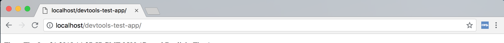
The CanJS Devtools extension adds several new pieces of functionality to Chrome's Developer Tools. These are discussed in the sections below.
Using the CanJS Devtools Panel
CanJS Devtools adds a top-level "CanJS" panel to Chrome's Developer Tools. This panel is made up of a Component Tree on the left and several sections on the right for handling common tasks.
Component Tree
The Component Tree is similar to the built-in Elements Panel, but only shows CanJS Components.
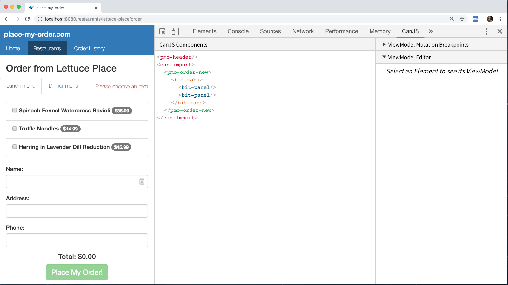
Clicking on a component in the tree will select it:
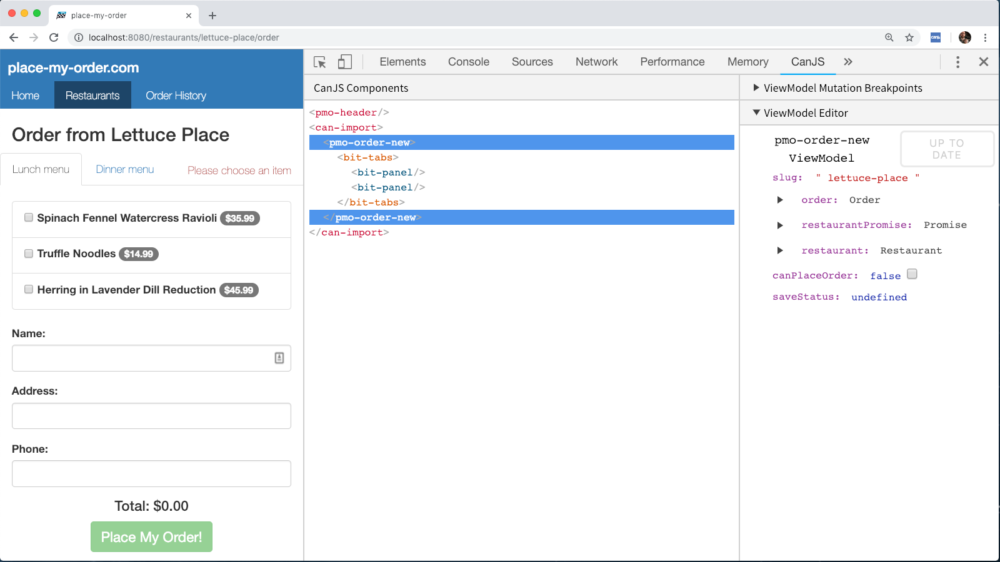
If a component is selected in the Elements Panel, it will automatically be selected in the CanJS Panel. If an element that is not a component is selected, its closest parent component will be selected automatically, if there is one.
Observable Properties Editor
As mentioned above, once a component is selected, its observable properties will be displayed in the Observable Properties Editor in the sidebar.
Maps and Lists can be expanded in the Editor by clicking on a key that has a dropdown, or by clicking the dropdown directly.
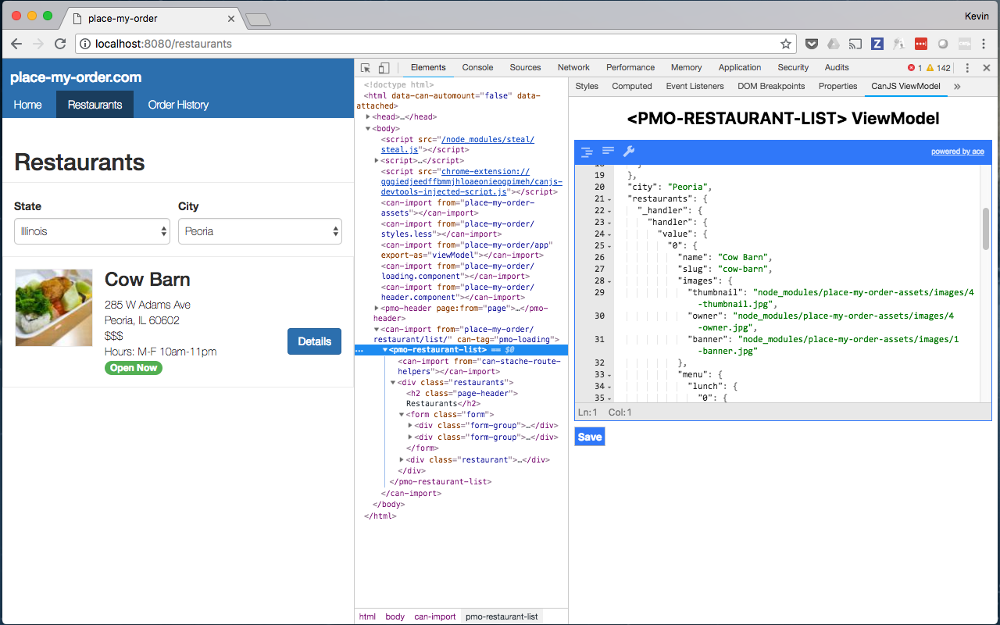
A property's value can be edited by clicking on it:
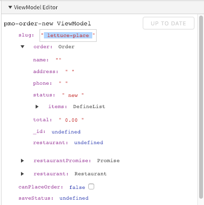
Boolean values can also be edited using the quick toggle checkbox:
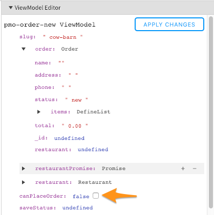
When hovering over a property, options will be shown on the right. All properties can be removed by clicking the − icon. If the property is an object, new properties can be added by clicking the + icon:
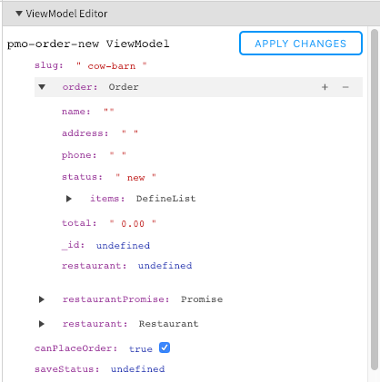
New properties can also be added to objects by clicking anywhere inside the object:
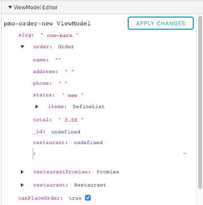
Once changes have been made, they can be applied back to the source observable properties, by clicking the "Apply Changes" button.
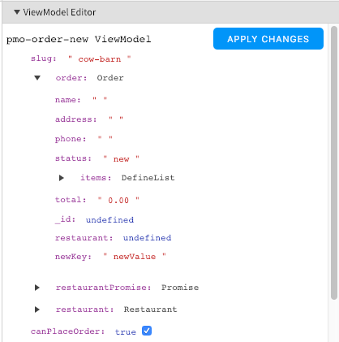
Observable Properties Mutations Breakpoints
The CanJS Devtools Panel also allows you to create breakpoints for when mutations happen to Component properties.
The Observable Properties Mutation Breakpoints sidebar can be expanded by clicking on the header:
Once expanded, a breakpoint can be created by typing an expression into the <input> element.
These expressions can be property names like canPlaceOrder, order.total, or order.items.length:
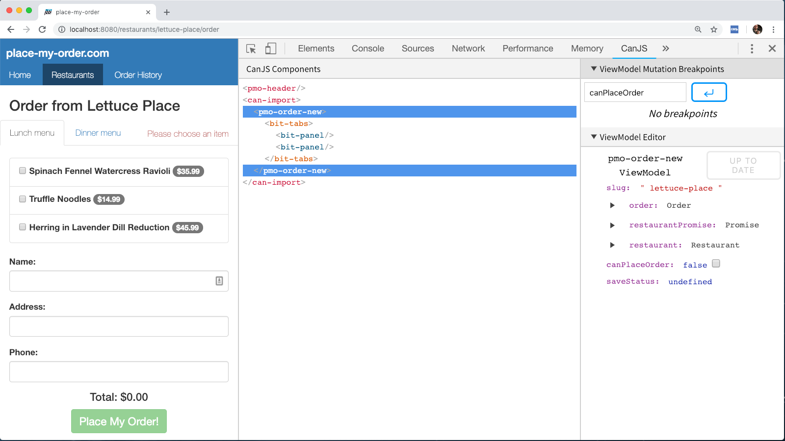
Expressions like this will create breakpoints that will be hit whenever the value of that property changes. When these breakpoints are hit, the logStack output will be displayed in the console so you can see exactly what caused the mutation to occur:
Breakpoints like order.items.length > 2 can also be created using comparison operators:
Expressions like this will create breakpoints that will be hit whenever the value of the expression changes from falsy to truthy:
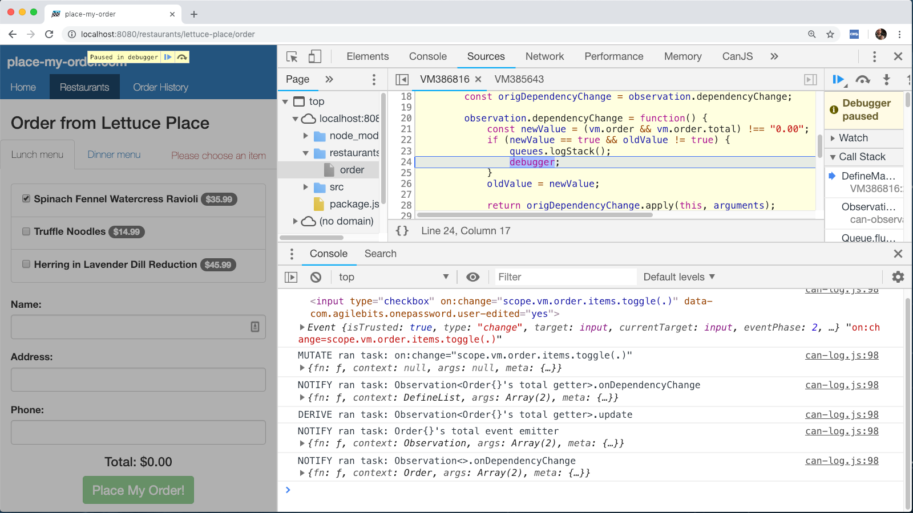
Once created, breakpoints can be disabled by clicking on the checkbox:
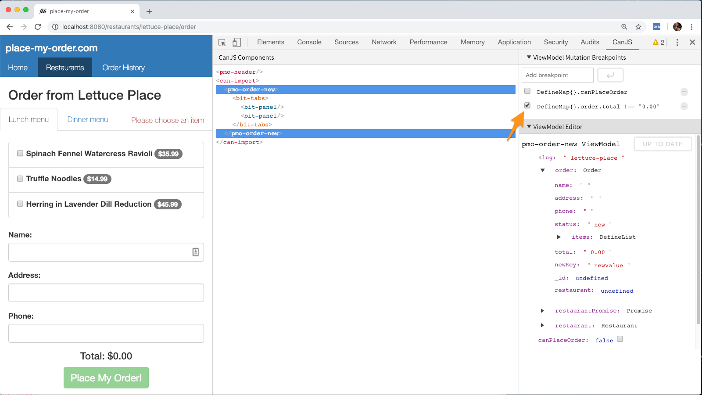
Breakpoints can also be deleted by clicking on the − icon:
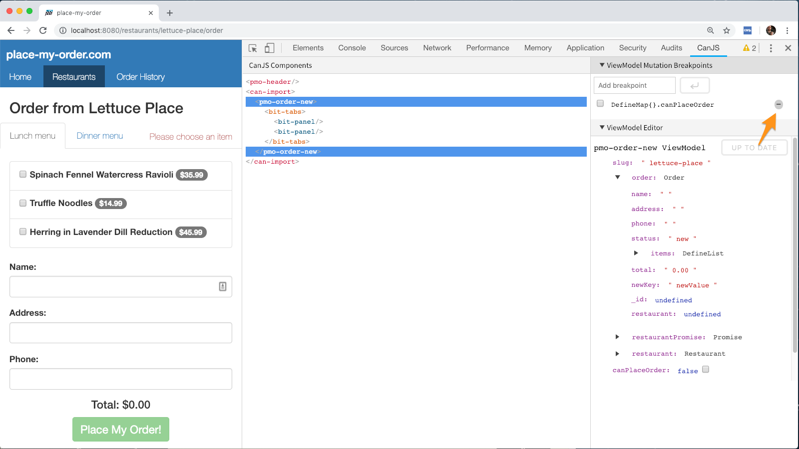
Using the CanJS Devtools Queues Stack
As discussed in Debug what caused a observable event or update to happen, the logStack method of can-queues can help figure out what tasks in CanJS’s queue system caused a function to run. In order to make this easier, CanJS Devtools adds a sidebar to the Sources Panel to display the logStack output:
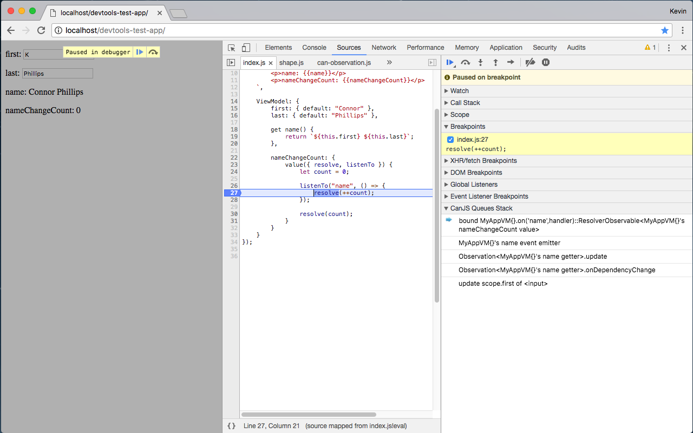
When stopped at a breakpoint in the Chrome Developer Tools, the Queues Stack is available in the sidebar:

Clicking on a function will open its definition in the Sources panel:

Using the CanJS Devtools Bindings Graph
When an element is selected in the Elements panel, a tab for the CanJS Bindings Graph will be added to the sidebar:
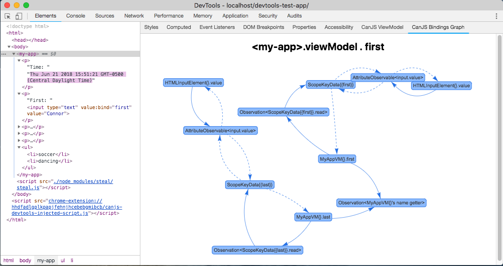
In order to find this, select the Elements panel:
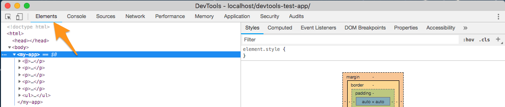
Then, depending on the size of the Developer Tools window, the CanJS Bindings Graph may be in the overflow menu:
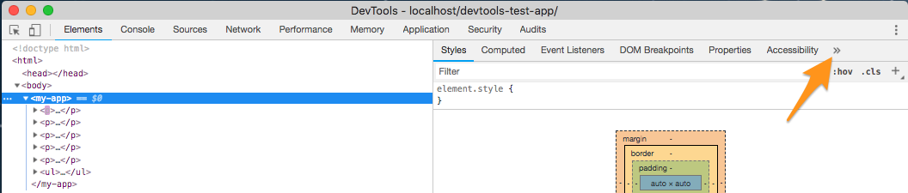
If the element that is selected has observable properties, the graph will show the relationships for a property:
By default, the property selected will be the first property on the observable properties alphabetically. Another property can be selected by clicking on the header:
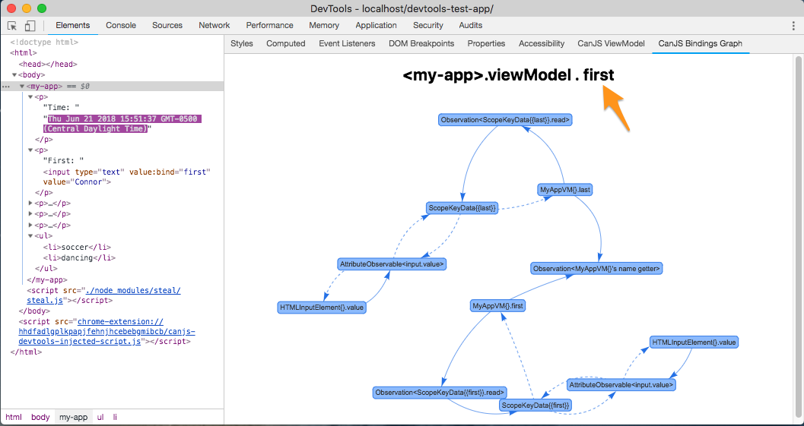
A dropdown of all of the available properties will be displayed:
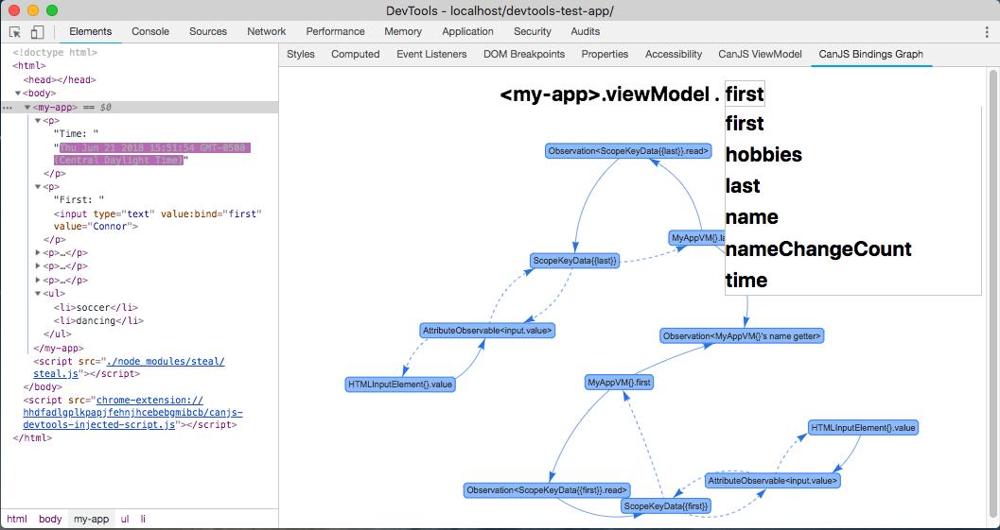
If the element selected does not have a observable properties, the graph will show the relationships for the element itself:
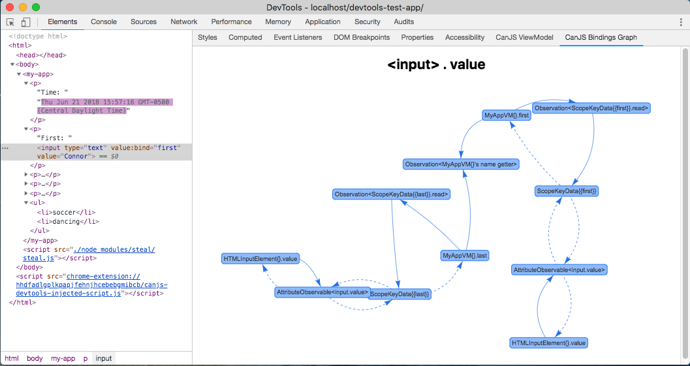
Using the standalone CanJS Devtools Observable Properties Editor
Similar to the Bindings Graph, a sidebar is added for the CanJS Observable Properties Editor. The Observable Properties Editor will be shown for the selected element — or the closest parent element that has observable properties:
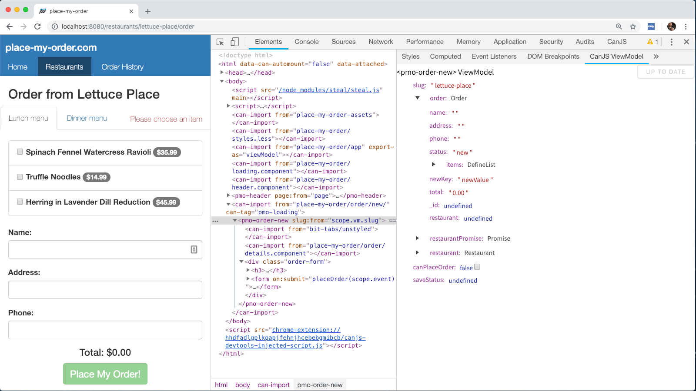
The standalone Observable Properties Editor has the same features as the Editor in the CanJS Panel.